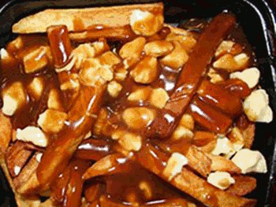

Poutine

Poutine is a Québécois dish made of fresh-cut french fries topped with cheese curds and gravy. It first appeared in 1950s rural Quebec snack bars. It was widely popularized across Canada and beyond in the 1990s. Poutine may be found everywhere from fine dining menus at top restaurants to fast-food chains including McDonald’s and Burger King. It has become an iconic symbol of Québécois cuisine and culture.
Ingredients
- 1 quart vegetable oil for frying
- 1 (10.25 ounce) can beef, chicken or mushroom gravy
- 5 medium potatoes, cut into fries or a package of frozen fries
- 2 cups cheese curds (preferably the ones that squeak)
Instructions
- Heat oil in a deep fryer or deep heavy skillet to 365 degrees F (185 degrees C). While the oil is heating, you can begin to warm your gravy.
- Place the fries into the hot oil, and cook until light brown, about 5 minutes. Make the fries in batches if necessary to allow them room to move a little in the oil. Remove to a paper towel lined plate to drain.
- Place the fries on a serving platter, and sprinkle the cheese over them. Ladle gravy over the fries and cheese, and serve immediately.
Home Page